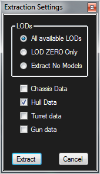

General Information on Tank Exporter
The first time Tank Exporter is ran, It will need to gather lots of data.
It will read and convert the shared_content and shared_content_sandbox and their HD counter parts and save only data related to the tanks in a file called shared_content_build.pkg in your temp folder section. The folder is called wot_temp.
This process takes a LOT of time.. Be patient.. It makes accessing the data easier for the app and faster.
When Tank Exporter runs for the first time, it will also need to download data from the WoT Dev API site.
There is a lot of data there about the tanks such as their in game name which TE needs to function correctly.
The loading of data from the API is stored in a temp folder so this only needs to happen once after you install TE.
Under the File menu, you can delete the temp folder. Use this when new tanks have been added or existing ones changed. TE will shut down because it can not function with out the data. When you run the app again, it will go through all the loading of the data again. Don't reset the data unless you really need the new or changed tanks!
Tank Exporter will need the path to the game set.. It will ask for this after its done gathering data.
Usually its something like "C:\Games\World_of_Tanks"
Also.. you should set the path to the res_mods folder. Its located under the File menu.
NOTE that the version may be different from what's shown here:
Usually the res_mods folder looks like this: "C:\Games\World_of_Tanks\res_mods\0.9.20.0"
By setting the res_mods folder, TE will look for textures in that path and load them. Nice for custom skin mods.
Also.. if you extract data, this is where it will be placed.. More on this below. You can change this path and extract the tank data anywhere you would like.
|
Loading of tanks is done by RIGHT clicking on a tank name in the list.
Exporting them is done in the same way.
Also.. To make life easier, you can also extract and create the data in the World of Tanks res_mods folder or where ever you chose. YOU WILL NEED TO SET THIS PATH!!!! |
|  |
If you decide to extract to the res_mods folder, you will be asked what you want to extract. You can chose All LODs, LOD0 or No models at all.
Below that you can pick what to extract. Chassis, Hull, Turret and Gun.
This also affects what textures will be extracted. If only Chassis is checked, than only textures with "Chassis" in their name will be extracted from the .pkg files.
Extracting to the res_mods folder will NOT overwrite existing files! This is to protect any modding to textures or tank models you have done.
If you want to re-extract them, delete them first.
NOTE: Some mod installers will completely erase the contents on the res_mods folder!!
Be sure to backup your files before using mod installers such as Ashlian's Mod Installer. |
| You can get some information about the Texture Viewer HERE. |
TE's exports version 2009 FBX.. This will not load directly into Blender.. However, you can download AutoDesk' FREE FBX converter. It can load and convert 2009 to new versions and also export in other formats such as OBJ. This tool of AutoDesk's should be in every 3D artist toolbox!
There are some items on the Menu bar that are pretty self explanatory. Try clicking them after a tank is loaded to see what they do.
Currently, TE can NOT import tanks and some tanks MAY be missing off the list. Some guns are missing as well.
|
|
There are some bugs with the camouflage... Some times there is more camo than is in the game or repeats of the same show up on the list.
This is a visual thing and not a big deal.. Be happy you can even load camouflage :)
|
This app was originally created to use with Terra.. A program I wrote to load maps from World of Tanks and create battle layout plans for Clan battles.
Clicking on a tank name adds it to the export list.. clicking on it again removes it. There is also a Menu item above the list to clear the selected tanks.
Under the File Menu, there is a selection to show the folder where all the tanks are exported to. This is not much use to the average user of TE.
If you are a programmer and want to use the exported tank data for Terra, there are 4 header strings in the files that explains what's in the file and the order.
|
I do this as a hobby... I work many hours figuring out how this stuff works and share my work on GitHub so others might create projects of their own.
If you like my Tools and use them.. please consider becoming a Patron of my work! More information is at the link below.
 |
Integrated DLLs and Programs with links to their licenses and more information.
Tao OpenGL : This project is now dead.. Sad.. It's a great Opengl Wrapper.
DevIL : Very nice Image loading and manipulation open source library.
DotNetZip : A great wrapper for working with zip files.
SlimDX : A wrapper that brings DirectX functions in to .NET. I use this for matrix mathematics.
|
Warning!!
| All Data.. Models and Textures(except a few I got of the internet) come from with in the game's .pkg files and the Dev API. This data is owned by War Gaming. |
|
|